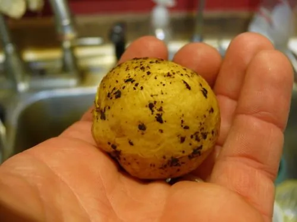

真菌 · 真菌界
立枯丝核菌 Rhizoctonia solani

引起水稻纹枯病和多种作物立枯病的土传病原真菌，菌丝在土壤和残体中蔓延，是稻田和苗床常见病害的元凶。
- 分类
- 门担子菌门纲伞菌纲目鸡油菌目科角担菌科属丝核菌属
- 栖息环境
- 土壤、病残体和作物根际，高温高湿时容易侵染发病
- 地理分布
- 全球农业区广泛分布，中国稻区和蔬菜产区常见
- 保护级别
- 暂无评估（植物病原菌，非保护对象）
物种志
立枯丝核菌是担子菌门鸡油菌目的植物病原真菌，主要以菌丝形态生长，菌丝呈直角分枝，在培养基上形成褐色菌落。它不产生大量的无性孢子，而是靠菌丝在土壤、病残体和植株间蔓延传播；有性世代产生担孢子，但很少见。
立枯丝核菌的寄主范围很广，可侵染水稻、玉米、大豆、棉花、蔬菜等多种作物，引起水稻纹枯病、立枯病和苗床猝倒病。水稻纹枯病是中国稻区的重要病害，病斑从叶鞘向上扩展，严重时导致倒伏和减产。病菌以菌核和菌丝在土壤和病残体中越冬，高温高湿时容易流行。防治以选用抗病品种、合理密植、控制氮肥和适时用药为主，病残体和带菌土壤是主要的初侵染来源。
形态与习性
- 分类担子菌门鸡油菌目角担菌科丝核菌属
- 形态菌丝直角分枝，形成褐色菌落和菌核
- 传播靠菌丝和菌核在土壤、病残体中传播
- 寄主水稻、玉米、大豆、棉花和多种蔬菜
- 病害水稻纹枯病、立枯病和苗床猝倒病
- 防控抗病品种、合理密植、控制氮肥和适时用药
趣味知识
- 立枯丝核菌主要靠菌丝和菌核传播，不产生大量无性孢子。
- 它引起的水稻纹枯病是中国稻区的重要病害之一。
- 高温高湿、氮肥过多时，纹枯病最容易流行。